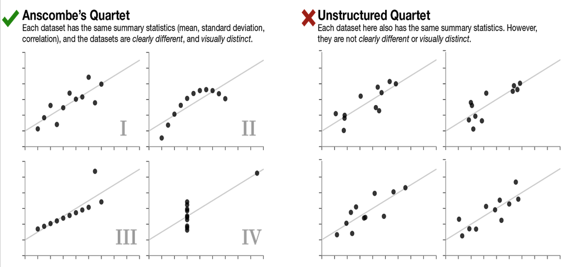

alt.Chart(cars, title="Fuel Efficiency and Engine Displacement").mark_point().encode(
x=alt.X("Displacement:Q", title="Engine Displacement (liters)"),
y=alt.Y("Miles_per_Gallon:Q", title="Fuel Efficiency (mpg)")
).interactive()12 Hypothesis Testing 2: Correlation
CIS 241, Dr. Ladd
14 Visualizing Correlation
14.1 Scatterplots show potential correlation between two variables
The y-axis shows the dependent variable, while the x-axis shows the independent variable.
14.2 Make a scatterplot with Altair
14.3 Add a line of best fit to make a regression plot
scatter = alt.Chart(cars, title="Fuel Efficiency and Engine Displacement").mark_point().encode(
x=alt.X("Displacement:Q", title="Engine Displacement (liters)"),
y=alt.Y("Miles_per_Gallon:Q", title="Fuel Efficiency (mpg)")
).interactive()
scatter + scatter.transform_regression('Displacement','Miles_per_Gallon').mark_line()14.4 Avoid overplotting with heatmaps or kernel density estimation.
# Heatmap example
alt.Chart(cars, title="Fuel Efficiency and Engine Displacement").mark_rect().encode(
x=alt.X("Displacement:Q", title="Engine Displacement (liters)").bin(),
y=alt.Y("Miles_per_Gallon:Q", title="Fuel Efficiency (mpg)").bin(),
color=alt.Color("count():Q")
)14.5 Correlation matrix shows all possible correlations.
# Re-arrange correlation matrix data
cars_corr = (cars.corr(numeric_only=True)
.stack()
.reset_index()
.rename(columns={0:'corr','level_0':'var1','level_1':'var2'})
)
# Create correlation heatmap
base = alt.Chart(cars_corr, title="Cars Correlation Matrix").mark_rect().encode(
x=alt.X("var1:N",title=None),
y=alt.Y("var2:N",title=None),
color=alt.Color("corr",title="Correlation coefficient").scale(scheme='blueorange')
).properties(width=300,height=300)
# Add text labels for coefficients
text = base.mark_text(baseline='middle').encode(
alt.Text('corr:Q', format=".2f"),
color=alt.condition(
(alt.datum.corr < -0.5) | (alt.datum.corr > 0.5),
alt.value('white'),
alt.value('black')
)
)
base+text # Display visualization15 Hypothesis Tests for Correlation
15.1 How do we know if a correlation coefficient is statistically significant?
There are standard parametric approaches to this, but we can use permutation!
15.2 We need a new simulation function for correlation.
def simulate_correlation(df,var1,var2):
shuffled = df[var1].sample(frac=1).reset_index(drop=True)
corr = shuffled.corr(df[var2])
return corr15.3 Let’s Try It!
Using the function from the previous slide, run 5000 permutations of the correlation between engine displacement and miles per gallon.
Graph the results as a histogram and calculate a p-value. Is this a statistically significant correlation?
16 Don’t be fooled!
Always use summary statistics and visualization together.

16.1 If we have the same mean, standard deviation, and correlation we might expect the data sets to be similar…
But they could be very clearly and visually distinct!

16.2 Data Challenge
Use pandas to find the summary statistics for each dataset in the datasaurus_dozen.
- Find mean, standard deviation, and correlation for both x and y of each dataset. (You may need to group things by the “dataset” column.)
- When you’re done, try making scatter plots! (You may need to use the
columnencoding.)